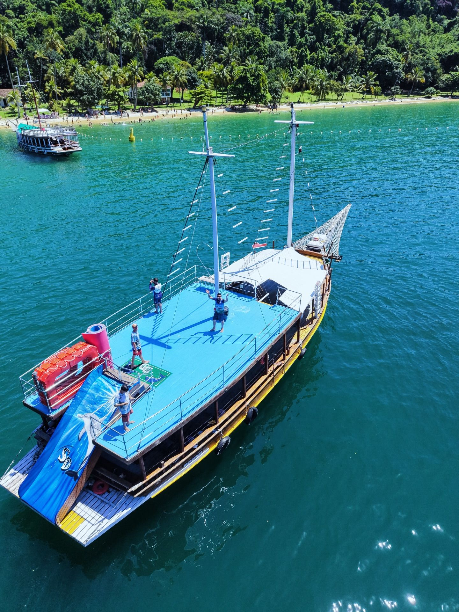
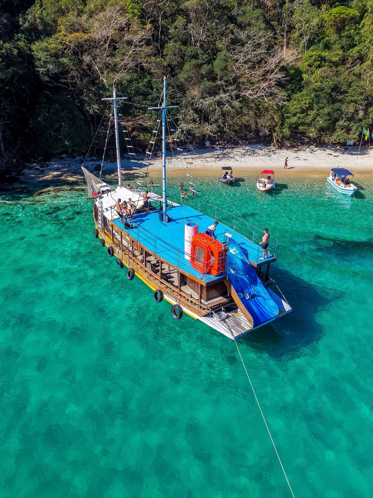
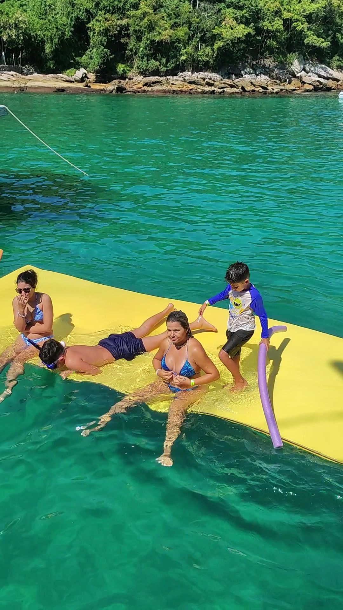
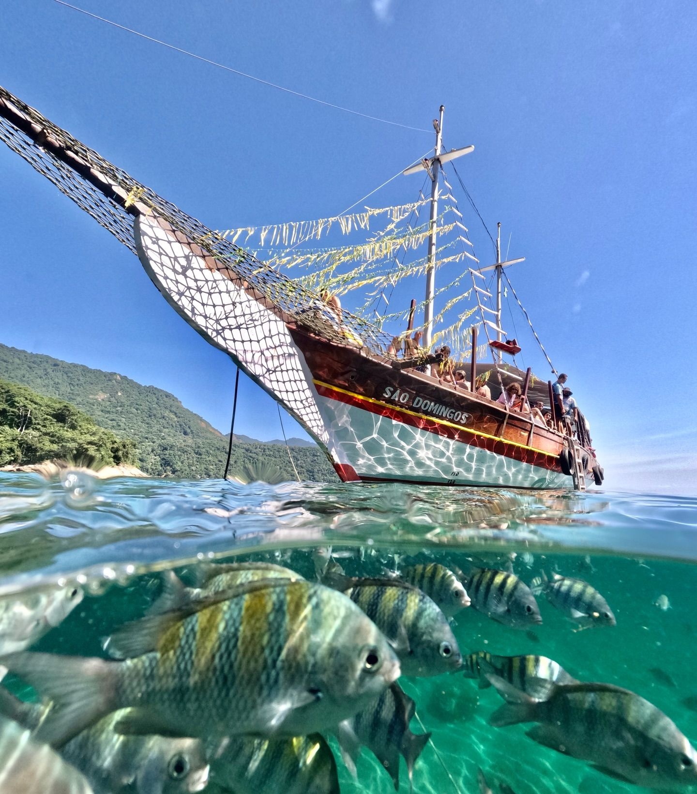

Escorrega
Do convés direto para a água.
Passeio de escuna saindo do Centro de Angra dos Reis.


Do convés direto para a água.

Para relaxar em cima do mar.

Água cristalina em cada parada.
As paradas que aparecem no nosso Instagram.
Carta ilustrativa. As paradas do dia dependem do mar e são confirmadas pela tripulação.
Leva 20 segundos.
“Ótimo passeio, tripulação animada e excelentes bebidas.”
Klaus Oliveira · Google
“Escuna grande, aconchegante e muito bem organizada.”
Flávio Seminário · Google
Cais de Turismo, perto da Estação Santa Luzia. Ponto e horário confirmados no WhatsApp.
Até 150 passageiros.
Do Centro de Angra dos Reis, na região do Cais de Turismo e da Estação Santa Luzia.
Escorrega, tapete flutuante, som, bar e churrasqueira, área coberta e solário.
Sim. Aniversários, excursões e empresas. Peça no WhatsApp.